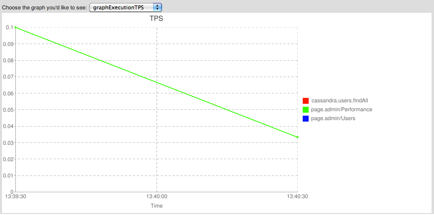

Main
Profiling
Displaying Graphs
Project Documentation

Perf4J defines itself as being what Log4J is to logging in Java.
This tools proves to be really useful in order to gather performance metrics.
Perf4J provides some integration with Spring, especially the AOP stuff.
Unfortunately 'til tapestry-perf4j, there was no easy way to reuse @Profiled annotations within Tapestry.
Although this work is still in progress, it is already useful in many situations.
What started as a way to gather performance metrics within Tapestry applications turned out to be more interesting when graphs could be generated too.
Two Tapestry components are available, allowing to either: - generate a specific Perf4J graph, - generate all Perf4J graphs with a graph chooser and some AJAX magic
The output of the components is illustrated on the following screenshot:
